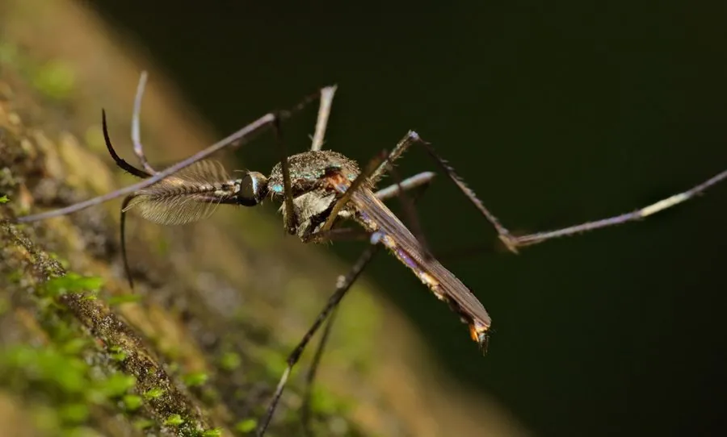

昆虫 · 动物界
华丽巨蚊 Toxorhynchites splendens

体色华丽的大型蚊类，成虫不吸血，幼虫捕食其他蚊虫的孑孓，被视为有潜力的生物防治材料。
- 分类
- 门节肢动物门纲昆虫纲目双翅目科蚊科属巨蚊属
- 栖息环境
- 竹林、树洞、竹筒、花盆等小型积水及附近的林缘
- 地理分布
- 中国南方及东南亚、南亚
- 保护级别
- 常见种，作为天敌资源受到关注
物种志
华丽巨蚊的成虫体长约八至十毫米，是中国体型最大的蚊类之一。体色华丽，胸背和腹部有蓝、绿、紫等金属光泽的鳞片，喙向后弯曲，不具刺吸功能，触须长而弯曲。雌蚊不吸血，只吸花蜜和植物汁液，因此不会叮人。幼虫体形巨大，头部有一对粗壮的大颚，是积水里凶猛的捕食者。
它分布于中国南方、东南亚和南亚，栖息在竹林、树洞和容器积水附近，成虫常在林间和庭院飞舞。幼虫生活在树洞、竹筒和花盆等小型积水中，捕食其他蚊虫的幼虫，一头巨蚊幼虫在整个发育期能吃掉上百条孑孓。由于成虫不吸血、幼虫专吃蚊虫，它被视为有潜力的生物防治材料，部分国家已开展人工释放试验，用于压制登革热媒介蚊种。
形态与习性
- 体长约八至十毫米，国内最大蚊类之一
- 体色蓝绿紫金属光泽鳞片，十分华丽
- 成虫食性不吸血，只吸花蜜与植物汁液
- 幼虫食性捕食其他蚊虫的孑孓
- 捕食量一生可吃掉上百条孑孓
- 用途生物防治试验材料
趣味知识
- 它是蚊子里的异类，个头最大却从不吸血，只喝花蜜。
- 它的幼虫是水中小霸王，专挑别的蚊子幼虫下口。
- 科学家试着在容器里放养它，用它的胃口来压制传播登革热的伊蚊。